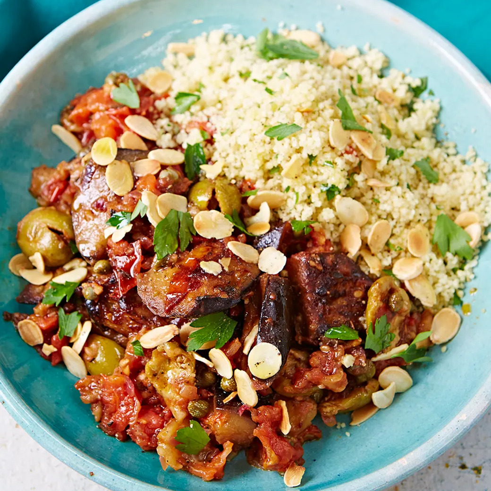
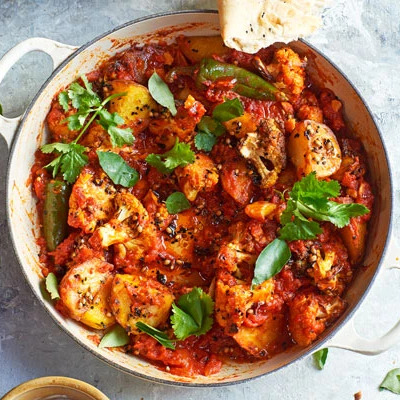
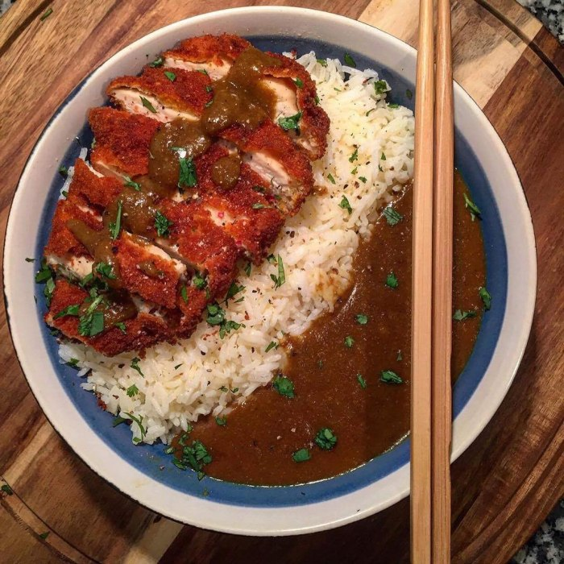
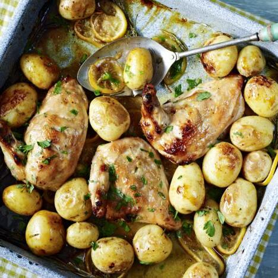
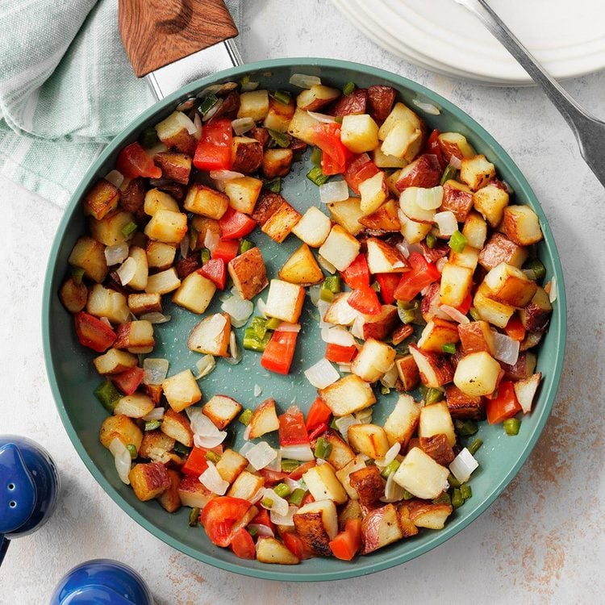
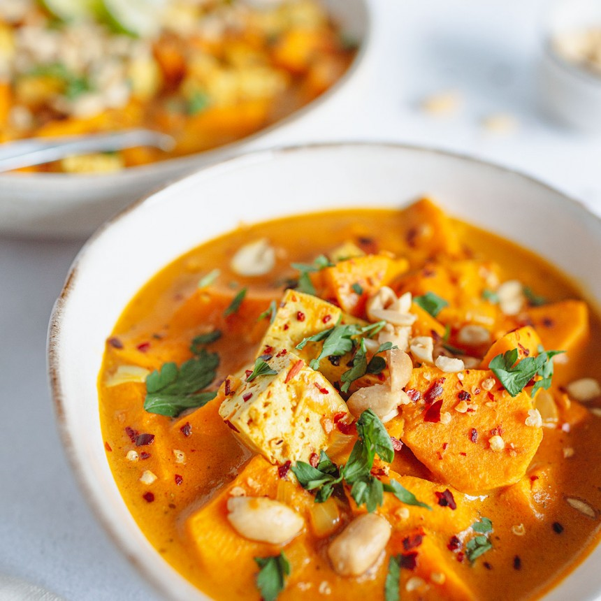
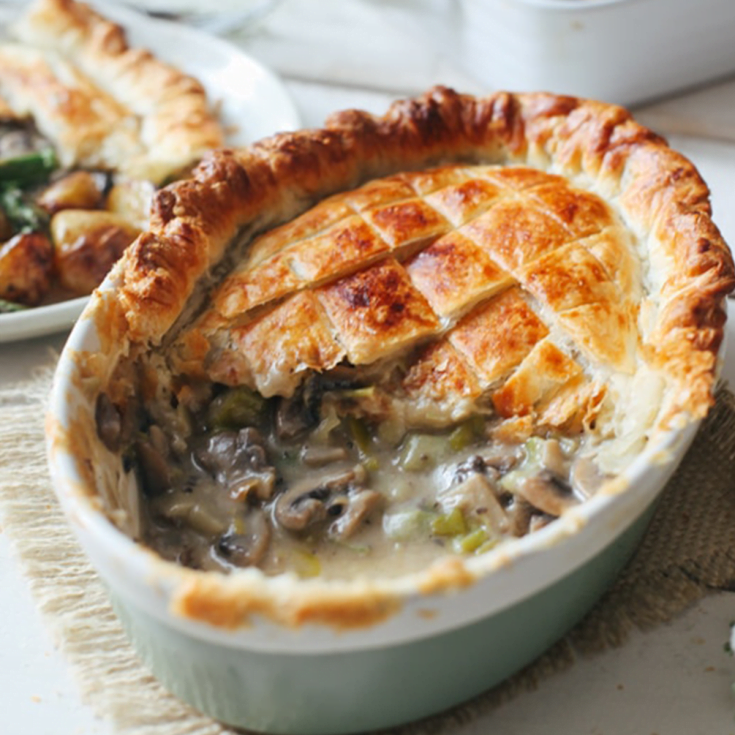
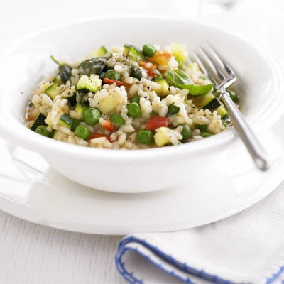

Recipes
Sicilian Stew

A fantastic dish from southern Italy that the Sicilians are super proud of – and so they should be – it’s a complete joy to eat. Jam-packed with veg, this recipe adds up to two of your 5-a-day, and using wholewheat couscous helps keep you fuller for longer.
Serves 2 | Takes 30 mins
View RecipeHarissa Pasta With Olives & Capers

A quick, vibrant pasta dish with a spicy tomato and harissa sauce, briny green olives, and capers. Finished with fresh herbs and lemon, this weeknight-friendly meal is packed with North African flavors.
Serves 4 | Takes 30 mins
View RecipeRoasted Aloo Gobi

This extra special vegan curry uses roasted cauliflower and potatoes to bring out their flavour. You can also serve as a side to meat curries
Serves 4 | Takes 65 mins
View RecipeGochujang Pasta

This vegan pasta dish is so easy to make but is deliciously spicy and comfortingly creamy. Feel free to swap the peas for shredded greens – or leave them out completely.
Serves 4 | Takes 30 mins
View RecipeKatsu Curry

Make our easy katsu curry with options for chicken or tofu, and adapt for vegetarian, vegan and gluten-free diets. Crispy cutlets, rich curry sauce, and fresh toppings make this a Japanese classic
Serves 4 | Takes 65 mins
View RecipeSteak & Ale Pie

Good meat, good beer and good pastry – it’s clear why this steak and ale pie is a winner.
Serves 5 | Takes 180 mins
View RecipeMushroom & Tarragon Pithivier
These rich, earthy puff pastry parcels pack a real punch. This rich, aniseedy pie needs only a leafy salad alongside.
Serves 6 | Takes 75 mins
View RecipeLemon Chicken Traybake

This tasty lemon chicken tray bake is super easy – all the flavour comes from the delectable honey and mustard marinade.
Serves 4 | Takes 165 mins
View RecipeChicken Madras

This hearty, spicy tomato-based curry is a classic from South India. Perfect for a winter warmer, especially if you like your curries hot.
Serves 4 | Takes 50 mins
View RecipeFiesta Red Potatoes

A delicious addition to any Spanish tapas night.
Serves 4 | Takes 45 mins
View RecipeLamb Biryani

Make this classic Indian dish for deliciously moist lamb with paneer, rice and spinach, all spiced to perfection. Great for casual entertaining
Serves 6 | Takes 60 mins
View RecipeSatay Sweet Potato Curry

Cook this tasty, budget-friendly vegan curry for an easy family dinner. With spinach and sweet potato, it boasts two of your five-a-day and it’s under 400 calories
Serves 4 | Takes 60 mins
View RecipePistachio Lamb Koftas With Apricot Relish

These budget-friendly, Middle Eastern-inspired lamb meatballs make a simple yet tasty supper, served with fruity chutney and crisp wholemeal pittas
Serves 4 | Takes 40 mins
View RecipeChicken & Pistachio Salad

Toss chicken breast, boiled eggs, Little Gem, sundried tomatoes and toasted nuts in a zesty dressing for a quick salad that's rich in calcium, folate and iron
Serves 2 | Takes 17 mins
View RecipeGnocchi Alla Norma

Bring the flavours of Italy to your kitchen with gnocchi for dinner. Made with a delicious tomato, basil and aubergine sauce, it's a tasty midweek meal
Serves 4 | Takes 35 mins
View RecipeMushroom & Leek Pie

A hearty vegan pie filled with leeks and mushrooms in a creamy dairy-free sauce, topped with golden puff pastry.
Serves 4 | Takes 55 mins
View RecipeSpring Chicken Pot Pie

Celebrate Easter with this spring chicken pot pie. It's kinder on your wallet than the traditional roast lamb, and equally enjoyable
Serves 6 | Takes 80 mins
View RecipeParsnip Gnocchi

Take parsnips to another level by turning them into gnocchi with a crunchy walnut crumb. This moreish dish is vegan, healthy and delicious.
Serves 4 | Takes 95 mins
View RecipeChicken & Chorizo Pie

A wholesome pie perfect for weekends. Flavour your Spanish sausage and chicken with sherry, parsley and a hint of cream
Serves 6 | Takes 150 mins
View RecipeSausage Kale Gnocchi One Pot

Plate up this delicious one-pot of sausage, kale and gnocchi in just 20 minutes, with just five minutes prep.
Serves 4 | Takes 20 mins
View RecipeCourgette Risotto

An easy one-pot vegan risotto with courgette, peas and tomatoes. Great reheated for lunch.
Serves 4 | Takes 45 mins
View RecipeChocolate Mousse

This easy dairy-free chocolate mousse is rich, creamy, and made with just a few simple ingredients. Perfect for those avoiding dairy, but delicious enough for everyone!
Serves 4 | Takes 250 mins
View RecipeSlow Cooker Korean Beef

Packed with flavour and meltingly tender beef, try this classic comfort food with steamed rice and greens.